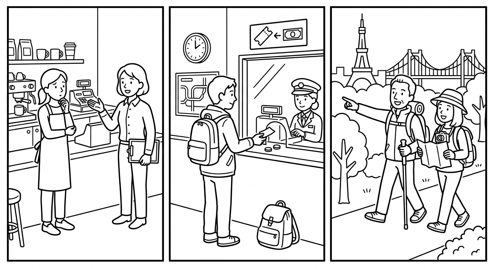

B3 Speaking Mission Exam
Complete two realistic missions: stories, plans, advice, and problems. Your goal is not perfect English. Your goal is to communicate the message, respond, decide, and keep the conversation alive.

- The examiner gives you two mission cards.
- You receive about one minute to prepare each card. You may write keywords, not a full script.
- You complete each roleplay and answer follow-up questions.
- The examiner may speak quickly or give one unclear detail on purpose. Use repair language.
- Your individual score is out of 100, even when you test with a partner.
| Scored area | Points | What it means |
|---|---|---|
| Communication | 30 | Complete the mission and make the main message understandable. |
| Understands and responds | 20 | Answer questions and react to new information. |
| Target language | 20 | Use useful B3 grammar: modals, past, future, conditions, and comparisons. |
| Pronunciation and clarity | 15 | Speak clearly enough to be understood. |
| Repair language | 15 | Ask for repetition, clarification, confirmation, or slower speech. |
| Total | 100 | Performance score |
Can you repeat that, please? · Could you speak more slowly? · I don't understand. · What does ___ mean? · Can you write it down? · Do you mean ___? · So I need to ___, right?
A Simple Mission Strategy
- Open: greet the person and say why you are talking.
- Explain: give the main story, plan, or problem.
- Detail: answer who, what, where, when — in order, with first / then / after that.
- Ask or decide: ask for advice, ask a question, or make a decision with a reason.
- Confirm: repeat the time, place, rule, or next step.
Recommended format: one examiner with one student for 6–8 minutes, or one examiner with a pair for 10–12 minutes. Assign two missions per student. At least one must be a problem-solving mission (3, 4, or the Plan B part of 2). Use a different card order for neighboring candidates.
Consistency: ask two follow-up questions per mission and introduce one repair opportunity across the exam. Do not coach, translate, or supply the target phrase. Score message completion first: a student who finishes the mission with imperfect grammar outperforms a student with perfect fragments who cannot finish.
First Day on the Job: Learn the Rules
It is your first day at a new job in a small café. Talk to your supervisor. Ask about the rules: what you must do, what you mustn't do, and what is optional. Ask for one piece of advice for the first week. Confirm your start time for tomorrow.
Give two rules with must/mustn't (for example: must wash hands every hour; mustn't use the phone behind the counter) and one optional item with don't have to (don't have to bring lunch — staff meals are free). Ask: “Do you have any questions?” and “Can you work on Saturdays?” Repair opportunity: say the start time quickly once. Mission success: the candidate learns at least two rules, asks for advice, and confirms the start time. Listen for the must / mustn't / don't have to contrast and Should I...?
Ticket Window: Choose and Decide
You are at the bus station ticket window. You are going to visit another city this weekend. Ask about two options (different times or prices), choose one, and say why. Then ask what happens if you miss the bus. Confirm the platform and departure time.
Offer two options with different times and prices (for example: 7:00 for 40 and 10:30 for 55). Answer the if question: “If you miss it, you can use the ticket on the next bus, but you must pay a small fee.” Ask: “When are you coming back?” Repair opportunity: say the platform number quickly once. Mission success: the candidate states the plan, chooses with a reason, and confirms platform and time. Listen for going to (plan) vs will (decision at the moment) and one comparative.
Festival Plan B: Prepare for Problems
You are organizing a small street festival for your community group. Talk to your helper. Explain the main plan, then explain the Plan B: what you will do if it rains, and what you will do if few people come. Give your helper one task and confirm when they will do it.
Ask: “What will we do if it rains?” and “What happens if only a few people come?” Accept the task and repeat it with one wrong detail so the candidate can correct or confirm. Mission success: the candidate gives a main plan, two real Plan B conditions, and a confirmed task. Listen for present tense after if/when (no “if it will rain”) and will in the main clause.
What Happened? Explain Your Morning
You arrived one hour late to work today. Your boss wants to know why. Apologize and explain what happened in order: your alarm didn't ring, you missed the bus, and you had to walk. Answer your boss's questions and say what you will do so it doesn't happen again.
Ask: “What time did you leave home?” and “Why didn't you call me?” Stay firm but fair; accept the apology at the end. Mission success: the candidate apologizes, tells an ordered story, answers both past questions, and offers a future solution. Listen for irregular past forms, didn't + base verb, wasn't/weren't, and sequencers.
Catching Up: Tell Your Story
You meet an old friend in the street after a long time. Tell the story of a real or imagined trip or special weekend: where you went, what you did, one problem you had, and how it ended. Answer your friend's questions, then ask your friend one question about their past.
React with interest. Ask: “Where did you stay?” and “Was it expensive?” Answer the candidate's question about your own past briefly so they must listen and react. Mission success: an ordered story with a problem and ending, both questions answered, and one well-formed past question asked back. Listen for the was/were vs did contrast in questions and sequencers.
Smart Shopping: Compare and Decide
You are in a shop to buy a backpack for work or study. The seller shows you two models. Ask the seller to compare them (price, size, quality), use comparatives yourself, choose one, and give your reason. Confirm the price before you pay.
Present two models with clear differences (price, size, weight, quality). Ask: “Which one do you prefer, and why?” Repair opportunity: say the final price quickly once. Mission success: the candidate compares, decides with a stated reason, and confirms the price. Listen for correct -er / more forms (no “more cheaper”) and one superlative if possible.
The Local Guide: One Free Day
A visitor has one free day in your town, and you are the local guide. Recommend two places with feeling (really, very, extremely, absolutely + adjective). Warn the visitor about one thing using too or not... enough. Suggest the order of the day and answer the visitor's questions.
Ask: “Is the market good?” and “Is it far from the center?” Add one preference (“I don't like crowded places”) so the candidate must adjust the recommendation. Mission success: two felt recommendations, one warning, and a day plan in order. Listen for very/really + gradable and absolutely + non-gradable pairing (very good / absolutely amazing) and too vs very.
Individual Speaking Rubric · 100 Points
| Area | Strong | Developing | Limited | Score |
|---|---|---|---|---|
| Communication · 30 | 26–30: completes both missions; stories, plans, and requests are clear | 19–25: completes most steps; some support needed | 0–18: isolated information; mission often incomplete | ____ / 30 |
| Understands/responds · 20 | 17–20: answers and reacts to follow-ups appropriately | 12–16: understands core questions with repetition | 0–11: responses are often unrelated or absent | ____ / 20 |
| Target language · 20 | 17–20: B3 forms (modals, past, future, if, comparisons) support meaning consistently | 12–16: some useful target language; errors rarely block meaning | 0–11: very limited range or errors frequently block meaning | ____ / 20 |
| Pronunciation/clarity · 15 | 13–15: understandable, audible, manageable pauses | 9–12: generally understandable with occasional strain | 0–8: clarity frequently blocks understanding | ____ / 15 |
| Repair language · 15 | 13–15: independently repairs, clarifies, or confirms | 9–12: uses at least one useful repair with some prompting | 0–8: gives up, switches language, or does not attempt repair | ____ / 15 |
| Total | ____ / 100 |
Before exam day:
- Print candidate cards separately from examiner sheets.
- Brief evaluators with the rubric and score two sample performances together.
- Prepare a quiet station, timer, card rotation, and a waiting-room review task.
- Decide whether candidates test individually or in pairs; never give a shared score.
Standard examiner script: “Hello. You will complete two short missions. You may ask me to repeat or speak more slowly. Mistakes are okay; keep communicating. You have one minute to read your first card and write keywords. Ready?” After the first mission: “Thank you. Now let's move to the second situation.” At the end: “Thank you. The exam is complete.”
Fairness rules:
- Use the same number of follow-up questions and repair opportunities for all candidates.
- Do not correct language during the performance.
- Do not lower pronunciation scores for accent; score intelligibility.
- Record observable evidence before choosing a band.
- If two evaluators differ by more than 10 points, review the evidence together.
- Offer an accessible alternative format when a documented need makes the standard procedure inappropriate.
Semester grade: Final grade = (Foundation Test 1 × 0.30) + (Foundation Test 2 × 0.30) + (Speaking Mission Exam × 0.40).